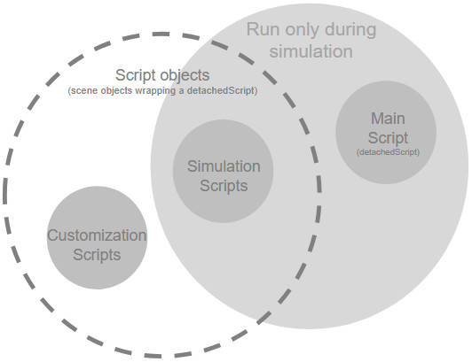

|
Embedded scriptsCoppeliaSim supports, next to the sandbox and add-ons, also embedded scripts: an embedded script is a detachedScript that is embedded in a scene (or model), i.e. a script that is part of the scene and that will be saved and loaded together with the rest of the scene (or model). Different types of embedded scripts are supported, each has specific features and application areas:  [Embedded script/detachedScript types] Embedded scripts, and all scripts in general, are invoked via callback functions by CoppeliaSim, and follow a specific execution order. They can run threaded or non-threaded.
|